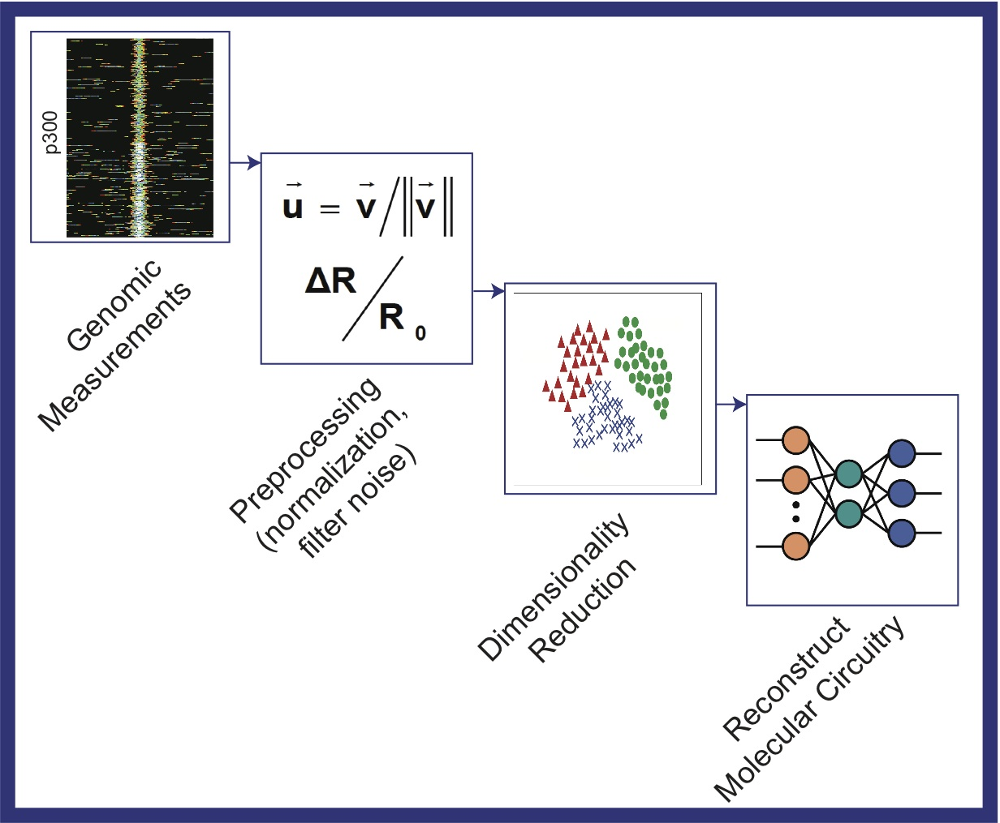

Research
Various cell types in the human body contain an identical copy of the genome but express a distinct set of genes. The Vahedi laboratory endeavors to understand how a genome guides a limited set of genes to be expressed at different levels in distinct cell types particularly in the immune system. Overwhelming evidence suggests that epigenomics instructs the unique gene expression program in each cell type. Epigenomics refers to packaging of DNA into chromatin and represents a highly plastic vehicle for specifying cellular regulatory states. The emergence of high throughput genomic technologies is providing biology with an explosion of new experimental data, quantitatively measuring various aspects of epigenome at a genome-wide scale. Our laboratory develops computational methods to integrate diverse high throughput data and unravel the basic principles of immunity from a systems level view.
Research Areas:
 |
|  | Pattern Recognition and Signal Processing Methods in Genomics |